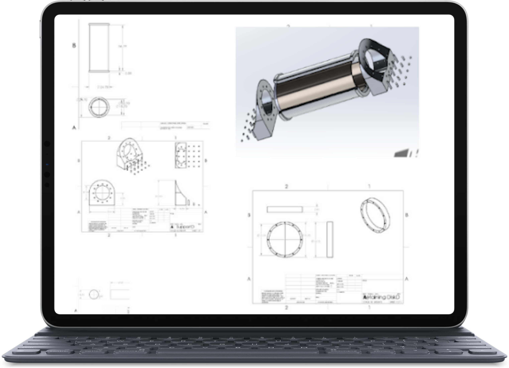

he Daniel Compact Prover has not undergone significant changes in many years and is in need of an update to remain competitive in the market. So during my internship, I was tasked with developing a prover design that would make it stand out against other competing provers that are currently in the market.
Emerson Daniel Compact Prover
December 2017 to June 2018
Position : Design Engineer Intern
Sponsor : The Emerson Company
Industries : Product Design, Mechanical Engineering
Need Statement : “A prover is an automated system that provides on-site calibration to ensure flow meters in service for fiscal and custody transfer applications maintain sustainable measurement performance as well as remain in compliance with industry standards.” The Daniel Compact Prover has not undergone significant changes in many years and is in need of an update to remain competitive in the market. The team will review the current compact prover and suggest ways to improve the current design to launch the next generation compact prover. Costs and ease of maintenance will be key factors to consider for the team.
Contributions
My focus was renovating the flow tube to remove the stress rods attached to it to allow for easy maintenance
Developed the solid works and cad geometry for the prover renovations
Developed a support system and calculated loads and possible forces acting upon the prover and its flow tube
Researched the petroleum engineering industry and standards for provers
Accolades
Showcased in the Texas A&M Senior Engineering Showcase
This project is restricted due to a nondisclosure agreement. Please contact me to learn more about it!